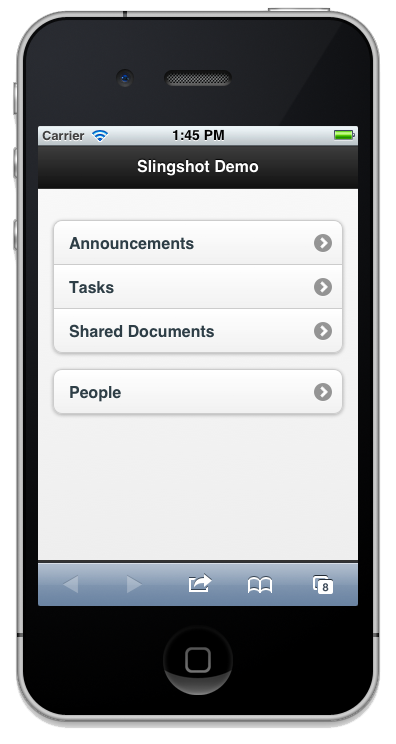
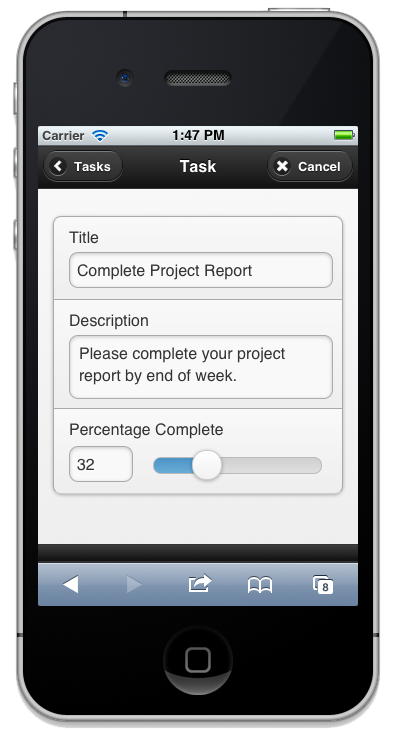
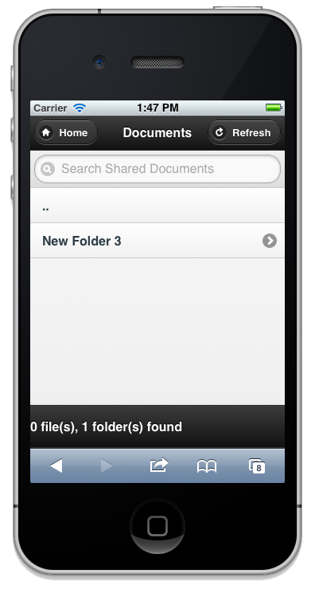

Neudesic Slingshot
Slingshot provides a HTML/Mobile Web client and library for Microsoft SharePoint Server 2010. Using jQuery Mobile, Slingshot makes it easy to expose tasks, appointments, documents, and other objects from any SharePoint 2010 instance to a mobile device.
  Quick Start
Clone the repository, 'git clone https://github.com/neudesic/slingshot.git'
Modify the compat.browser file in SharePoint (often found in c:\inetpub\wwwroot\wss\VirtualDirectories\80\App_Browsers). Locate the sections that apply to your devices, and set the isMobileDevice value to false. An example of how to do this for the iPhone can be found in the Support folder.
Create a new virtual directory (e.g. slingshot) under the SharePoint route in Inetmgr, and add the index.html, Scripts, and Styles folders.
Browse to http://yourserver/slingshot from your mobile device!
Copyright and License
Copyright (c) 2012 Neudesic, LLC
Permission is hereby granted, free of charge, to any person obtaining a copy of this software and associated documentation files (the "Software"), to deal in the Software without restriction, including without limitation the rights to use, copy, modify, merge, publish, distribute, sublicense, and/or sell copies of the Software, and to permit persons to whom the Software is furnished to do so, subject to the following conditions:
The above copyright notice and this permission notice shall be included in all copies or substantial portions of the Software.
THE SOFTWARE IS PROVIDED "AS IS", WITHOUT WARRANTY OF ANY KIND, EXPRESS OR IMPLIED, INCLUDING BUT NOT LIMITED TO THE WARRANTIES OF MERCHANTABILITY, FITNESS FOR A PARTICULAR PURPOSE AND NONINFRINGEMENT. IN NO EVENT SHALL THE AUTHORS OR COPYRIGHT HOLDERS BE LIABLE FOR ANY CLAIM, DAMAGES OR OTHER LIABILITY, WHETHER IN AN ACTION OF CONTRACT, TORT OR OTHERWISE, ARISING FROM, OUT OF OR IN CONNECTION WITH THE SOFTWARE OR THE USE OR OTHER DEALINGS IN THE SOFTWARE.